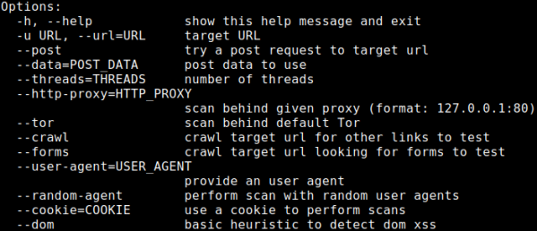

XSSsniper
Github:
https://github.com/gbrindisi/xsssniperWARNING: no more updated from 2017
Gianluca Brindisi (
@gbrindisi) developed the Python-based xsssniper in an attempt to
automate
Reflected
XSS testing.
Although xsssniper can directly target a specific URL, it can also work as an XSS spider to
crawl the site to discover additional potential inputs
root@kali:/# git clone https://github.com/gbrindisi/xsssniper.git
root@kali:/# cd xsssniper
root@kali:/# python xsssniper.py
 example
python xsssniper.py -u "[site]" --crawl --forms --http-proxy 127.0.0.1:8080
-u “[site]” → Providing a target starting point
--crawl → Indicating that xsssniper should crawl
the site to discover additional entry points
--forms → xsssniper should look for injectable forms to
target
--http-proxy 127.0.0.1:8080 → Run the tool through a proxy
Bibliography:
•
http://brindi.si/g/blog/introducing-xsssniper.html